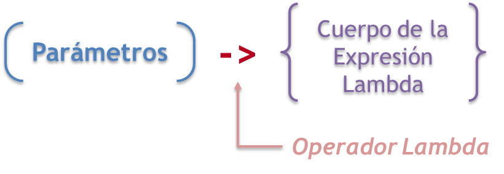
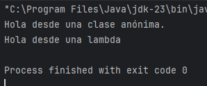
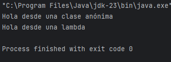
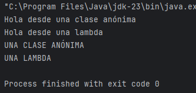

Una expresión lambda es un bloque corto de código que toma parámetros y devuelve un valor.

La expresión lambda más simple contiene un solo parámetro y una expresión:
parámetro -> expresión
Para usar más de un parámetro, los envolvemos entre paréntesis:
(parámetro1, parámetro2) -> expresión
Para realizar operaciones más complejas, se puede usar un bloque de código con llaves:
(parámetro1, parámetro2) -> {bloque de código}
Y si la expresión lambda necesita devolver un valor, entonces el bloque de código debe tener una declaración return:
(parámetro1, parámetro2) -> {
bloque de código
return elemento_devuelto;
}
Para empezar a implementar ejemplos concretos con las expresiones anteriores, primero deberemos implementar una interfaz funcional.
Una interfaz funcional es una interfaz que solamente tiene un método abstracto, como podría ser la siguiente:
@FunctionalInterface
public interface Ejecutor {
void ejecutar();
}Una vez que tenemos nuestra interfaz funcional, lo que podemos hacer simplemente con lo que sabemos es crear una clase anónima:
public class Main {
public static void main(String[] args) {
Ejecutor ej = new Ejecutor(){
@Override
public void ejecutar() {
System.out.println("Hola desde una clase anónima.");
}
};
}
}El problema de esto es que tenemos bastante código para solamente traer un método de la interfaz. Sin embargo, lo que podríamos hacer para acortarlo es crear directamente una expresión lambda:
public class Main {
public static void main(String[] args) {
Ejecutor ej = new Ejecutor(){
@Override
public void ejecutar() {
System.out.println("Hola desde una clase anónima.");
}
};
Ejecutor lambda = () -> {
System.out.println("Hola desde una lambda");
};
ej.ejecutar();
lambda.ejecutar();
}
}
En este caso, como solamente realizamos una instrucción println no serían necesarias las llaves, por lo que nuestro código quedaría todavía más simplificado desde la lambda:
Ejecutor lambda = () -> System.out.println("Hola desde una lambda");Para probar las lambdas cuando tenemos métodos abstractos con parámetros, vamos a modificar el método ejecutar() de la interfaz para añadirle un parámetro:
@FunctionalInterface
public interface Ejecutor {
void ejecutar(String param1);
}La clase anónima y la lambda se empezarán a quejar tras el cambio, ya que también deben reflejar un parámetro en la llamada a ejecutar(). Las adaptamos:
public class Main {
public static void main(String[] args) {
Ejecutor ej = new Ejecutor(){
@Override
public void ejecutar(String param1) {
System.out.println("Hola desde " + param1);
}
};
Ejecutor lambda = (param1) -> System.out.println("Hola desde " + param1);
ej.ejecutar("una clase anónima");
lambda.ejecutar("una lambda");
}
}
También podríamos modificar el método ejecutar() de nuestra interfaz para retornar algún tipo de parámetro, por ejemplo un String:
@FunctionalInterface
public interface Ejecutor {
String ejecutar(String param1);
}
Una vez más, nuestra clase anónima y lambda se quejarán tal y como están implementadas, ya que deben adaptarse al nuevo cambio. Por lo tanto, las adaptamos para retornar un tipo String:
public class Main {
public static void main(String[] args) {
Ejecutor ej = new Ejecutor(){
@Override
public String ejecutar(String param1) {
System.out.println("Hola desde " + param1);
return param1.toUpperCase();
}
};
Ejecutor lambda = (param1) -> {
System.out.println("Hola desde " + param1);
return param1.toUpperCase();
};
String resultadoAnonima = ej.ejecutar("una clase anónima");
String resultadoLambda = lambda.ejecutar("una lambda");
System.out.println(resultadoAnonima);
System.out.println(resultadoLambda);
}
}